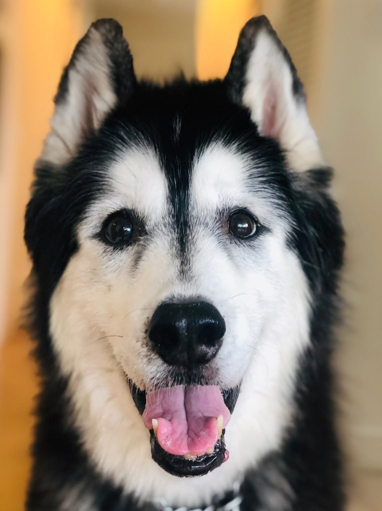
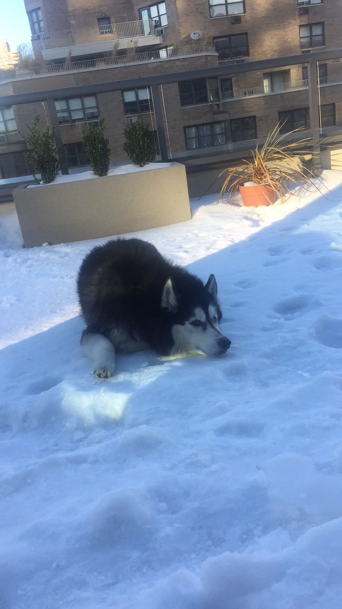
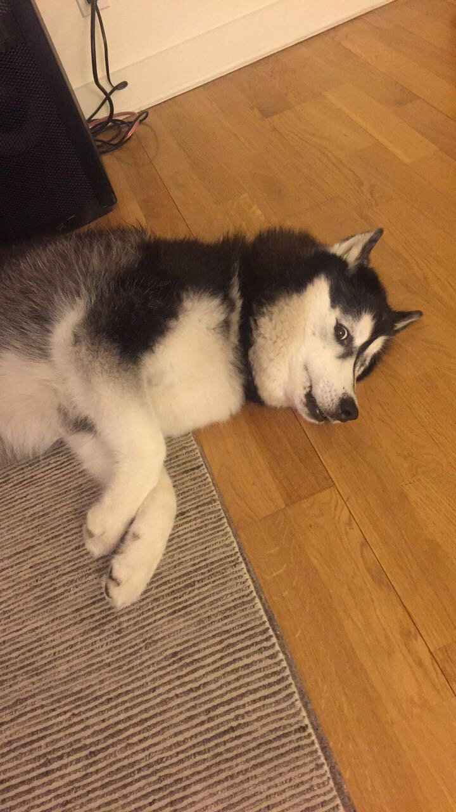
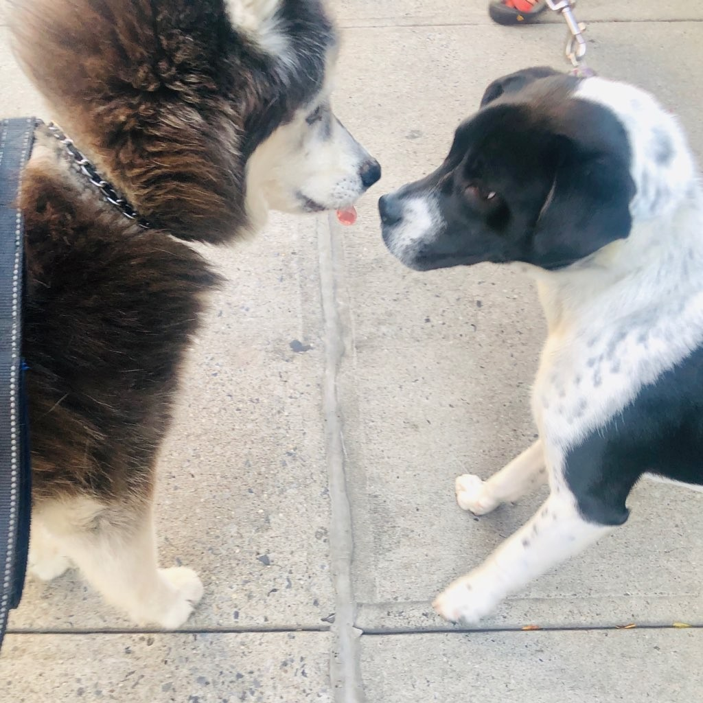
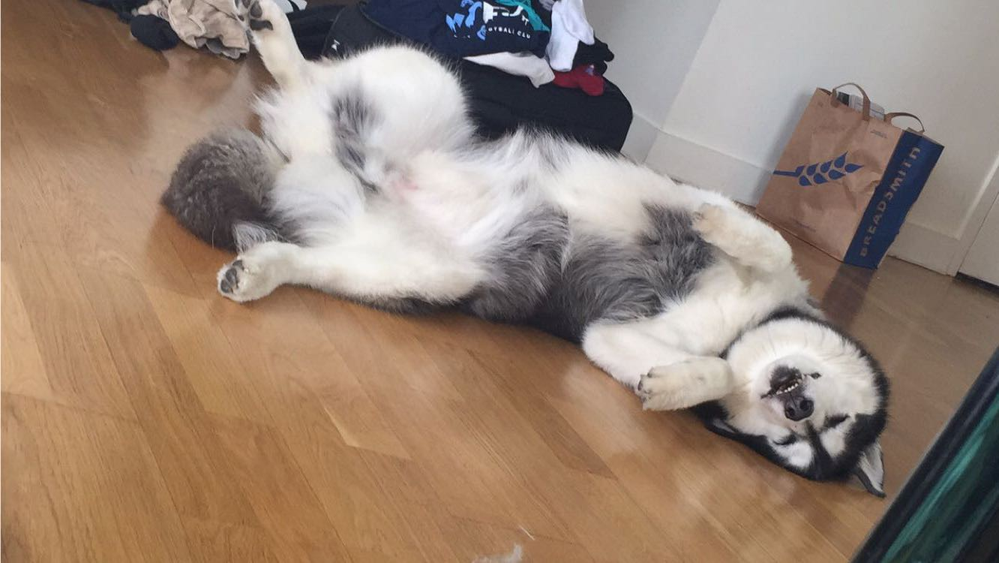

They are recognizable by their thickly furred double coat, erect triangular ears, and distinctive markings. The American Kennel Club describes the Siberian Husky's eyes as "an almond shape, moderately spaced and set slightly obliquely." The AKC breed standard is that eyes may be brown, blue or black.

They originated in subzero climates, Siberian huskies are always ready for severe winter weather. They have a double coat, comprised of a very thick, short undercoat that helps them retain body heat, and a long outer coat that's water-resistant, while their almond-shaped eyes offer protection from loose snow and strong sunlight reflecting off of snow. WTheir long, bushy tails can be wrapped around their faces while they sleep for extra warmth.

Due to the peculiarities of their psyche, huckies have no aggression towards humans or other animals at all. In addition, huskies often shows independence, which is a disadvantage for service dogs.

Most Siberian huskies are good with other dogs, especially ones they are raised with. They have a high prey drive and may chase cats and livestock. Siberian huskies can be diggers, particularly in warm weather, because they like to create cool places to lie in. They don’t tend to bark as a rule but they do howl.
These are dogs bred to run, and their love of running may overcome their love for their guardians at times. These are dogs bred for running, and they should have a good run at least a couple of times weekly.

Huskies are known for their crazy sleeping positions. We may be very amused with their remarkable body positions while asleep. One position is the back down, paws up. This position signifies that he feels very comfortable and safe. This position naturally leaves him exposed and vulnerable, so he wouldn’t rest like this unless he felt absolutely secure.